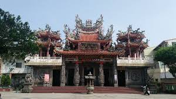
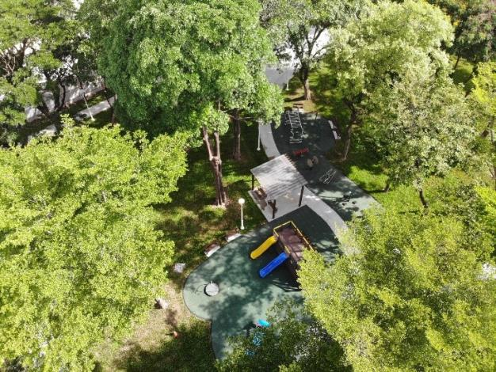
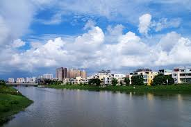

國昌里簡介
本里里內有：診所4間方便就醫，三菱.裕隆汽車公司.爭鮮迴轉壽司.可麗亞等餐廳.燦坤3C電子量販店方便里民消費．國昌國中．後勁溪親水公園．國昌公園等讓里民有休憩的場所．更有免費停車場讓里民停車．本里非常適合重視休閒及退休養生達人定居
文化面
右昌一甲福德廟
右昌一甲福德廟創建於康熙年間，由右衝庄境主大元帥爺公之指示創建。歷經百餘年，於昭和八年由右昌仕紳楊亦安、林憨條、林龍鳳、詹角等人集資捐輸重建。目前樣貌為1979年再次重建。
資料來源：中研院文化資源地理資訊系統
環境面
國昌里公園
國昌里公園位於楠梓區智昌街及富昌街間，周邊有右昌森林公園，北鄰後勁溪，周邊住宅林立，商業、教育、交通機能豐富，為地方型鄰里公園。在規劃設計階段辦理2場公民參與活動，凝聚社區意識，將居民的想法融入到設計中，並透過小朋友手作工作坊落實兒童表意權，原基地內空間瑣碎，基礎設施老舊已不堪使用，市府藉由本次計畫進行全面改造更新，提供優質之鄰里休憩空間之公園。
資料來源：高雄市政府
 後勁溪攔水壩
後勁溪攔水壩
後勁溪
後勁溪又稱援中港溪，位於楠梓區北端，後勁溪流域包括高雄縣的橋頭、大社、仁武、鳥松和高雄市的楠梓、左營兩區。 後勁溪長二十一公里，在七十點四平方公里的流域裡，後勁溪的支流有二，一來自高雄縣鳥松鄉的曹公圳，曹公圳在仁武鄉的八卦寮與從東蜿蜒而來的獅龍溪匯合；另一支流，則為源自大社鄉的楠梓溪。
資料來源：維基百科